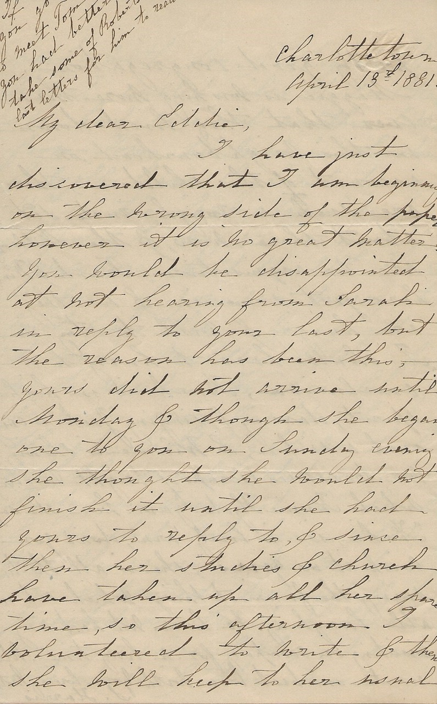

Charlottetown
April 13th, 1881.
My dear Eddie,
I have just discovered that I am beginning on the wrong side of the paper however it is no great matter. You would be disappointed at not hearing from Sarah in reply to your last, but the reason has been this, yours did not arrive until Monday & though she began one to you on Sunday evening she thought she would not finish it until she had yours to reply to, & since then her stitches & church have taken up all her spare time, so this afternoon I volunteered to write & then she will keep to her usual day Sunday.
Your account of the toffee boiling amused us greatly & I can imagine what diversion it was for you all. I hope you will enjoy your holidays. Have Kieth & H. Carvell gone to St. John for the holidays? Frankie & Winnie are out playing this afternoon, it is a lovely day & they are with a nice little group of play fellows the Hanfords, Hydes & one or two others, I can see them all skipping running jumping from Mr. Hanford’s to Dr. Hyde’s & back again. Frankie is quite well & there are no signs of Winnie getting the chicken pox.
Maggie is getting stronger every day, yesterday she walked down here to see us & I went back with her & stayed to Tea. I called also to see Etta, she had received another letter from Tom, he was in London & will leave England tomorrow 14th in the ‘Sarmation’ so I suppose he may arrive in Halifax somewhere about the 24th. It will be nice if you can manage to meet him there. You forgot to send Mr. Ellis’s letter for us to read.
We are having service every night this week though last night we had not the usual address, Mr. Hodgson was not in church & we did not hear what was the cause. Mr. Bambrick has improved wonderfully, he preached on Sunday night a very impressive & eloquent sermon, extempore & there was a pretty good congregation. Maggie is wishing more than ever that they lived down in this neighbourhood, on account of the children, there are such a rough rude set about there now, & the Nillsons are no acquisition.
Frank & Winnie have just come in & as they are hungry & wish to stay in I shall have to hurry to a conclusion, Frank is in high spirits, dancing & singing ‘Jack is every inch a sailor’, & Winnie is showing me treasures (scraps of bright wool) which Fannie Hyde gave her, she says “Frankie, is lovely ‘arn, don’t you wish it was your’s”, she is all the time saying the funniest things which sets us all laughing. We have not had any visiting or company for a long time.
All unite in best love with your loving Mother S. Harris
If you go to meet Tom you better take some of Robert’s last letters for him to read.